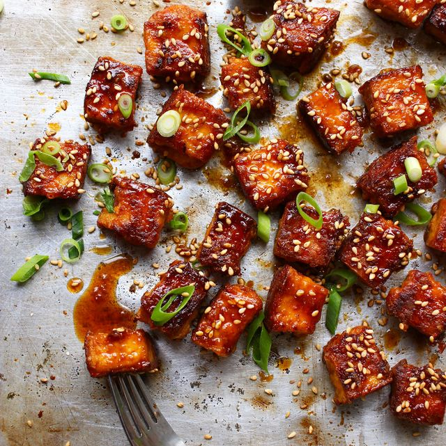

This baked tofu recipe is insanely easy and insanely delicious
- 1 lb. extra firm tofu
- Your favorite teriyaki sauce, my favorite is Soy Vey.
- Rinse the tofu and press out excess water for 30 minutes
- Cut tofu into thick strips about 1/2in by 1.5in pieces
- Marinate tofu in teriyaki sauce for at least 1 hour
- Place tofu on a baking sheet and bake at 400 for 30 minutes
flipping halfway through cooking time.
- Let cool and enjoy!